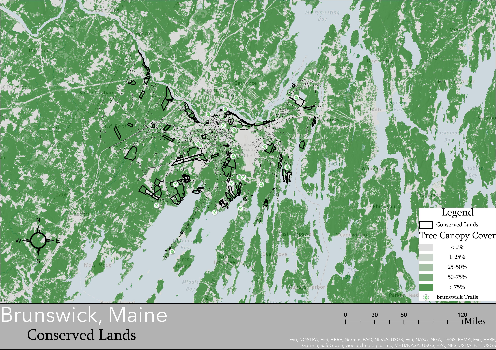
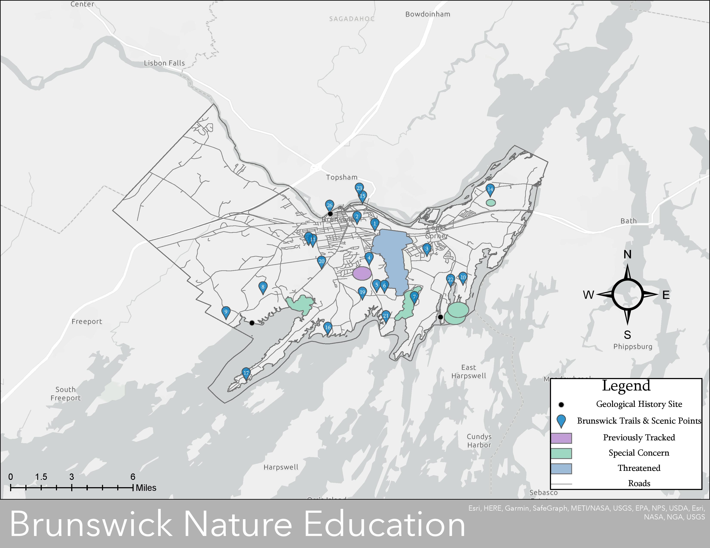
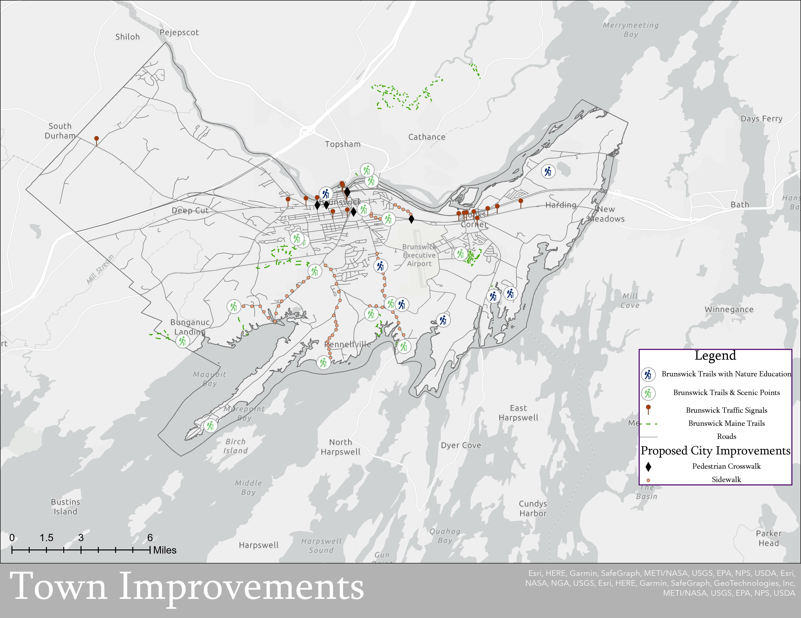

Brunswick
ME
An Analysis of Trails in Brunswick, ArcGIS
This project examines the trail system in Brunswick, Maine. The project was a presentation divided into many parts to examine the placement of trails in Brunswick as well as suggestions to improve trail accessibility. Three parts of the project were chosen for demonstrative proposes. All data was collected from the Maine Geolibrary.
Part 1 demonstrates hiking trails in relation to conserved land as tree canopy cover. This map uses raster data to demonstrate tree canopy cover and vector data to depict trails and conserved land area.

Part 2 of the project looks at natural data of special interest in comparison to trail locations. Special interest includes threatened and endangered species as well as historical geological sites. This map may be used to improve town education on spatial locations of important local ecology. Additionally, the town of Brunswick could use this information to create informational signs that provide public education at these sites of special interest.

Part 3 proposes town improvements to increase accessibility to trails and increase pedestrian safety within the town. Town improvements include crosswalks and sidewalks that may increase walkability between trails as well as increased pedestrian safety in congested areas.
